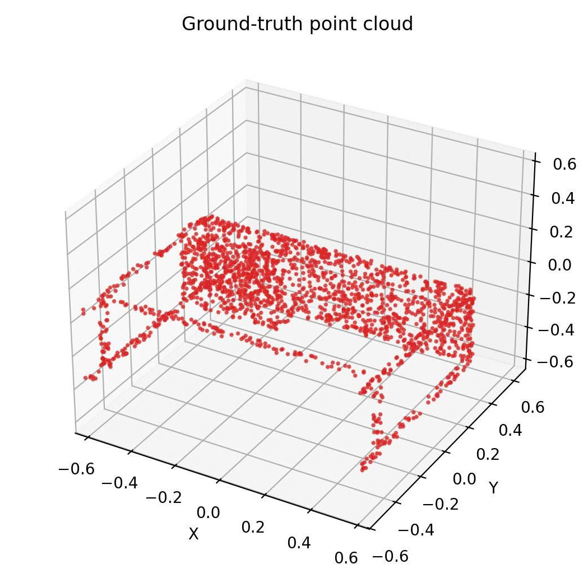
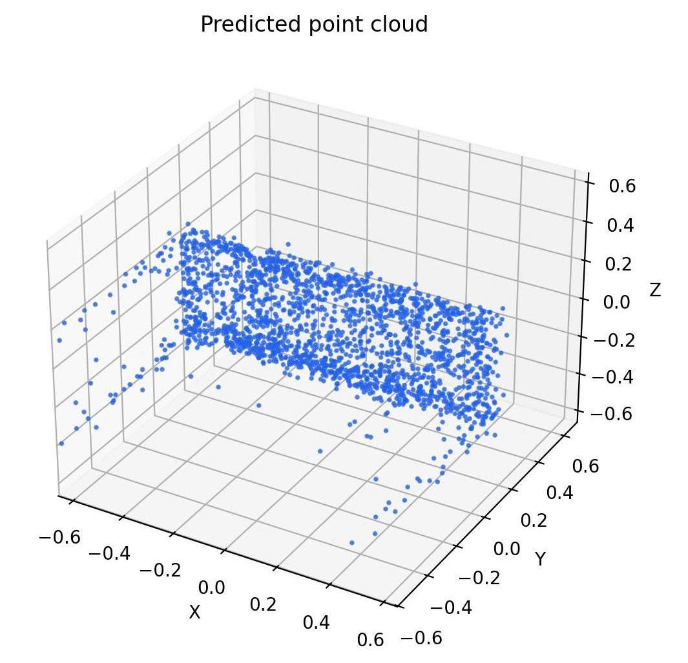
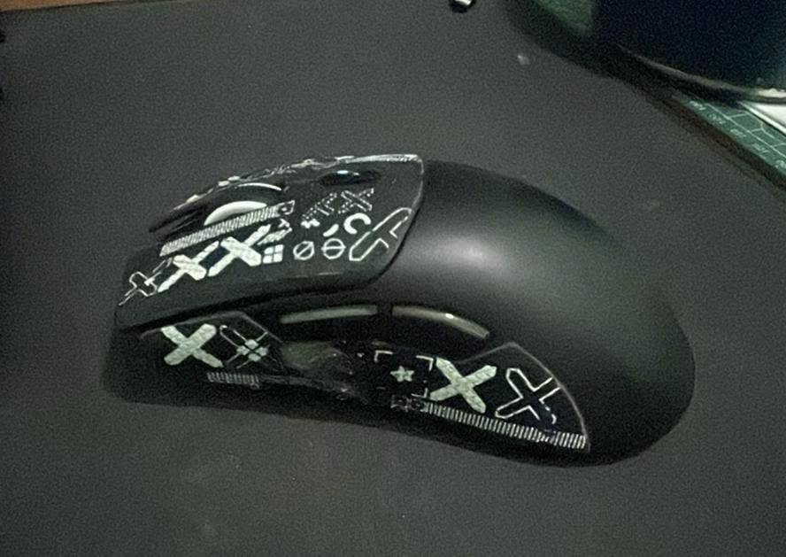
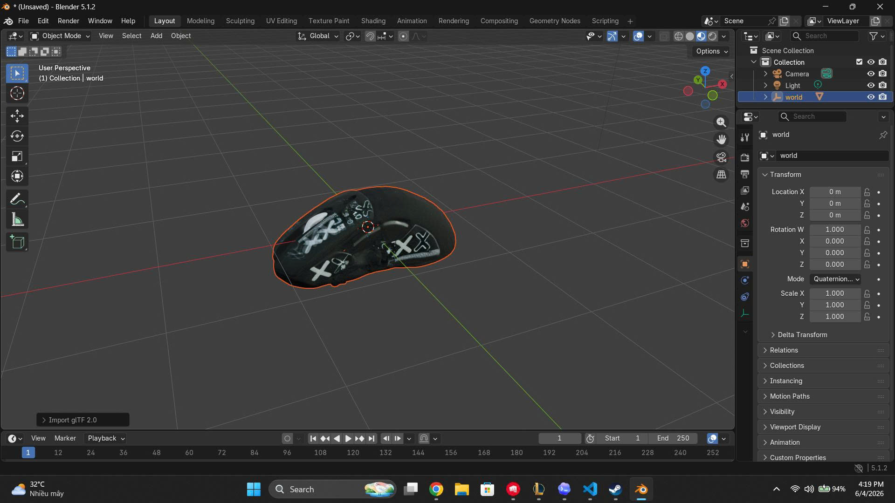

Xây dựng hệ thống tái tạo mô hình 3D từ một ảnh 2D
Hệ thống kết hợp rembg và Hunyuan3D-2 để tiền xử lý ảnh đầu vào, tách nền và sinh mô hình lưới 3D có thể preview trên phần mềm đồ họa.
GV Hướng Dẫn
ThS.NCS. Hà Thanh Dũng
Thành Viên Tham Gia
Phạm Minh Chiến - 3124410027
Đỗ Mạnh Huy - 3124410113
Đoàn Quang Khải - 3124410138
Tại sao chọn đề tài này?
Ứng Dụng Thực Tiễn Rộng Rãi
- E-Commerce: Cho phép người dùng chụp ảnh sản phẩm để xoay 3D hoặc áp dụng AR xem thực tế ảo trước khi mua.
- Game & AR/VR: Đơn giản hóa công đoạn dựng asset game, chỉ cần một ảnh chụp tạo ngay Base Mesh.
- Giáo Dục & Di Sản: Số hóa các cổ vật, mô hình học tập trực quan sinh động 360 độ.
Thử Thách Kỹ Thuật Lớn
Suy luận không gian 3D từ một bức ảnh 2D duy nhất là bài toán Ill-posed cực kỳ hóc búa:
Kiến trúc tổng quan hệ thống End-to-End
Expo React Native
Giao diện di động mượt mà, tối ưu hóa trải nghiệm người dùng cuối.
// Nhiệm vụ xử lý
• Camera Capture & Image Picker
• Gửi ảnh lên Backend API
• Preview mô hình 3D dạng GLB/OBJ trên mobile
FastAPI Service
Trạm trung chuyển dữ liệu tốc độ cực cao, quản lý phân luồng tác vụ.
// Nhiệm vụ xử lý
• Nhận ảnh từ mobile app
• Tạo job_id và xử lý bất đồng bộ bằng Job Queue
• Gửi tác vụ sang GPU Inference Server
• Lưu file kết quả và trả URL tải/preview
GPU Inference Server
Mô hình Generative AI mạnh mẽ đảm nhận tái cấu trúc hình học.
// Nhiệm vụ xử lý
• rembg: tách nền / phân vùng vật thể
• Hunyuan3D-2: sinh mesh 3D và texture
• Xuất định dạng: GLB, OBJ, PLY
• Trả kết quả về Backend để app hiển thị
Phương pháp ban đầu: ResNet50 + MLP Decoder
Trước khi áp dụng mô hình lớn, nhóm tự phát triển một hệ thống mạng cơ bản (Baseline) để hiểu rõ cấu trúc dữ liệu hình học 3D dạng Point Cloud.
(x, y, z) của Point Cloud.
Chamfer Distance Loss Formula
Tối ưu hóa vị trí của 2048 điểm trong không gian để mô phỏng hình dạng vật thể gốc.
Pix3D
Dataset Huấn Luyện
2048
Số Điểm Point Cloud
Luồng xử lý Baseline: ResNet50 + MLP

Trích xuất & Dự đoán

So sánh Baseline (ResNet50+MLP) vs Hunyuan3D-2
| Tiêu chí so sánh | ResNet50 + MLP Baseline | Hunyuan3D-2 (Cải Tiến) |
|---|---|---|
| Bản chất đầu ra | Tập hợp các điểm rời rạc (Point Cloud) | Lưới đa giác kín (Mesh) & Texture màu sắc |
| Xử lý Texture | Không hỗ trợ chất liệu bề mặt | PBR Texture tự suy luận thế giới thực |
| Chỉ số đánh giá | Định lượng (Chamfer Distance, F-Score) | Chất lượng thẩm mỹ, cấu trúc trực quan |
| Độ tương thích tệp | Chỉ lưu dạng tọa độ Point Cloud | Xuất tệp tiêu chuẩn (GLB, OBJ, PLY, v.v.) |
| Tài nguyên yêu cầu | Nhẹ, huấn luyện nhanh trên CPU/GPU cơ bản | Nặng, yêu cầu VRAM cao (NVIDIA GPU Cloud) |
* Kết luận: Baseline là nghiên cứu nền móng học thuật, Hunyuan3D-2 là cốt lõi để đưa vào sản phẩm ứng dụng.
Khó khăn kỹ thuật khi tự phát triển model
Point Cloud thưa, chưa tạo được Mesh hoàn chỉnh
Mô hình baseline chủ yếu tạo ra Point Cloud thưa với 2048 điểm. Kết quả này mới biểu diễn được hình dạng tổng quát của vật thể, nhưng chưa đủ chi tiết để tạo bề mặt mesh mịn, có texture và sử dụng tốt trong các ứng dụng AR/VR hoặc game.
Dataset hạn chế
Dữ liệu ghép cặp chuẩn hóa giữa ảnh 2D và mô hình 3D ground truth còn hạn chế. Với Pix3D, số lượng mẫu theo từng loại vật thể không quá lớn, góc chụp và điều kiện ảnh chưa đủ đa dạng. Điều này khiến mô hình khó học được hình dạng 3D ổn định, đặc biệt khi xử lý ảnh thực tế từ người dùng.
Tích hợp và triển khai Pipeline phức tạp
Mô hình có thể chạy thử nghiệm trong Notebook, nhưng khi tích hợp vào hệ thống thật cần xử lý nhiều vấn đề: backend API, truyền file ảnh, hàng đợi tác vụ, quản lý GPU, lưu trữ kết quả và trả file 3D về ứng dụng di động. Đây là thách thức lớn khi chuyển từ mô hình nghiên cứu sang sản phẩm end-to-end.
Giải pháp cải tiến: Hunyuan3D-2 pretrained

Tách nền & Dựng lưới Mesh

Preview mô hình 3D xoay 360° trong HTML
Đang tải mô hình 3D...
Đặt file GLB tại ./mesh_textured.glb
Xem trực tiếp kết quả
Slide này nhúng file GLB trực tiếp vào HTML bằng model-viewer, giúp thầy cô có thể quan sát mô hình 3D có shape và màu mà không cần mở Blender.
Cách gắn model
Copy file .glb vào thư mục presentation
Tương tác
Kéo chuột để xoay, cuộn để zoom, auto-rotate để mô phỏng preview 360°.
Mô hình triển khai Cloud trên GCP
Thời gian xử lý trung bình cho một ảnh đầu vào
Kiến trúc xử lý Job-Based bất đồng bộ
Để xử lý các mô hình AI nặng như Hunyuan3D-2, hệ thống sử dụng kiến trúc hàng đợi bất đồng bộ. Cách này giúp ứng dụng không bị treo trong lúc GPU đang xử lý tác vụ dựng mô hình 3D.
Đăng ký Job: Người dùng gửi ảnh từ mobile app lên backend. Backend lưu ảnh, tạo job_id và trả mã job cho ứng dụng ngay lập tức.
Polling trạng thái: Ứng dụng định kỳ gọi API để kiểm tra trạng thái xử lý. Backend cập nhật các trạng thái như queued, running, completed hoặc failed.
Tải kết quả: Khi job hoàn tất, hệ thống trả về đường dẫn tải file mô hình 3D, ví dụ GLB/OBJ/PLY, để ứng dụng preview hoặc tải về.
Số liệu thực nghiệm & Đánh giá mô hình
Đánh giá Mô hình Baseline (ResNet50+MLP)
Nhóm đã huấn luyện mô hình cơ bản với 150 epoch trên hai danh mục vật thể chính của tập dữ liệu Pix3D: bàn (table) và ghế (chair).
Chamfer Distance (CD)
0.007527
Càng thấp càng tốtF-Score
0.6855
Càng cao càng tốt• Recall: Bao phủ khoảng 66.8% cấu trúc hình học tổng thể của vật thể thực tế.
Đánh giá Pipeline Cải Tiến (Manual BBox + rembg + Hunyuan3D-2)
Pipeline mới được đánh giá dựa trên tiêu chí chất lượng trực quan, khả năng thực thi và độ mượt mà khi kết nối di động.
Giả lập Quy trình tương tác trên Mobile App
3D RECON RECON
Chụp hoặc chọn ảnh thực tế chuột máy tính của bạn
Đang tải lên và xử lý...
rembg xử lý input -> Hunyuan3D-2 tạo mesh và texture
Đang tải GLB...
Trải nghiệm tương tác mượt mà
Nhóm thiết kế quy trình đơn giản hóa hoàn toàn trải nghiệm người dùng cuối trên ứng dụng di động:
Bước 1: Chụp ảnh trực tiếp
Người dùng chỉ cần chụp ảnh vật thể từ một góc tốt nhất bằng camera điện thoại và gửi lên backend.
Bước 2: Xử lý thông minh trên Cloud (~240s)
Server tiếp nhận bất đồng bộ, thực hiện loại bỏ vật thể nhiễu sau đó tự động tái tạo lưới đa giác mesh 3D.
Bước 3: Xem kết quả xoay 360 độ
Mô hình hoàn chỉnh xuất ra dưới dạng file .glb người dùng sử dụng phần mềm độ họa để preview
Kết luận & Hướng phát triển
Thành quả đã đạt được
Nhóm đã xây dựng được luồng xử lý End-to-End từ ảnh 2D đầu vào đến mô hình 3D đầu ra. Bên cạnh baseline tự huấn luyện để nghiên cứu thuật toán, nhóm còn tích hợp mô hình Hunyuan3D-2 pretrained nhằm cải thiện chất lượng tách vật thể và dựng mô hình 3D.
Mục tiêu phát triển tiếp theo
Trong giai đoạn tiếp theo, nhóm sẽ tập trung cải thiện chất lượng đầu vào bằng cách tích hợp thêm mô hình SAM2 của meta nhằm có được input sạch và đẹp nhất. Tối ưu thời gian xử lý trên GPU, hoàn thiện cơ chế Job Queue bằng Redis và nâng cấp khả năng preview mô hình 3D trên thiết bị di động.
Hỏi & Đáp (Q&A)
Em xin chân thành cảm ơn Thầy Cô và các bạn đã dành thời gian theo dõi và lắng nghe phần trình bày đồ án này.